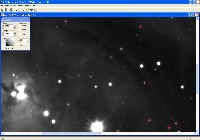
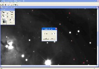
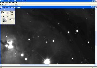

|
Image Processing - CCDSharp Deconvolution
|
CCDSharp is a freeware program available from SBIG.
As the title suggests, it is used to sharpen astronomical images (FITS files). It does this by applying
the Richardson-Lucy Deconvolution algorithm to the image.
The user must specify:
- Which stars should be used to determine the "Point Spread Function" for the algorithm. Choose stars
that are not saturated.
- How many iterations of the deconvolution algorithm to run. Many factors come into play, so this is
determined for a particular imaging setup by trial and error. It's best to start with a small number (1),
and see what happens when the deconvolution is run with higher numbers. At some point, artifacts will begin
to appear, and/or the image will start to take on an unrealistic appearance with hard edges. Use the number
of iterations that will provide some sharpening, but no objectionable artifacts.
|
|
Step A: Load File, select stars
|
Load the FITS file that is to be deconvolved. If necesary, adjust the
"back" and "range" numbers so that a representative sample of stars can be viewed.
Click on the red plus sign in the tool bar at the top of the screen, and then click
on up to eight stars in the image. For best results, select stars that are not close
to other stars or image features, and that are not saturated. It is not necessary to
exactly center the red crosses on the selected stars.
|

|
|
Step B: Select Number of Iterations, Initiate Deconvolution
|
Click on the green GO button in the tool bar at the top of the screen.
In the popup-window, select the number of iterations to execute.
Note that CCDSharp actually performs 10 times the number of indicated Richardson-Lucy
iterations as indicated. For instance, a selection of 3 iterations in CCDSharp will
cause 30 actual Richardson-Lucy iterations to occur. This is only relevant for
comparison with other programs which provide deconvolution functionality, but do not
have this "10-times" multiplier in the iteration count selection
Click the OK button to start the deconvolution.
Deconvolution is a very computationally intense operation. The 20-meg SBIG STL-11000m
files take about 40 minutes for a 3-iteration CCDSharp deconvolution on a 3 Ghz PC.
|

|
|
Step C: Save Deconvolved File
|
The status bar at the bottom of the CCDSharp screen will indicate the status of
the ongoing deconvolution progress, and will list Deconvolution Complete
when it has been completed.
Save the file. It is a good idea to rename the file when saving it so that you
don't lose the original non-deconvolved file. You may want to use it as a starting
point later for another number of iterations, or try another program for deconvolution.
If you can open two browser windows and switch back and forth between this image and the first one above,
you will clearly see the improvement made by the deconvolution routine.
|

|
{kind=link}
{kind=link}
{kind=link}